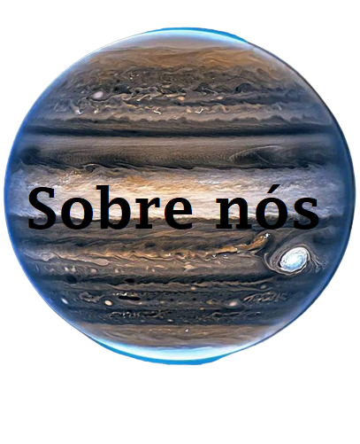
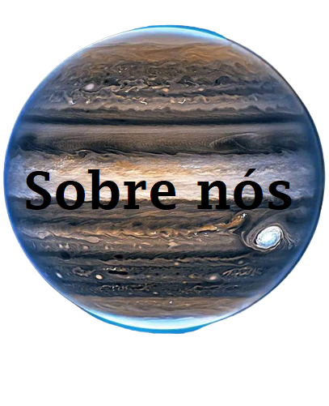
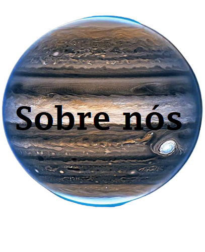
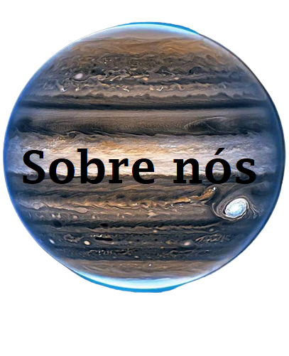

Mary Jackson formou-se em 1942. Trabalhou por décadas como engenheira na Nasa. E agora, 80 anos depois, a agência espacial irá rebatizar sua sede, em Washington, com o nome dela.
Jackson formou-se em matemática e em física. Até que, em 1951, aos 30 anos,
conquistou uma vaga na Nasa. Mais especificamente, no Langley Research Center,
que fica em Hampton. Ela foi trabalhar como “computadora”. Era uma época em que
os cálculos de engenharia aeronáutica eram realizados no braço.
E em 1958 ela se tornaria a primeira mulher negra com um cargo de engenheira na
Nasa. Permaneceu as duas décadas seguintes desenvolvendo estudos sobre aerodinâmica
de foguetes.